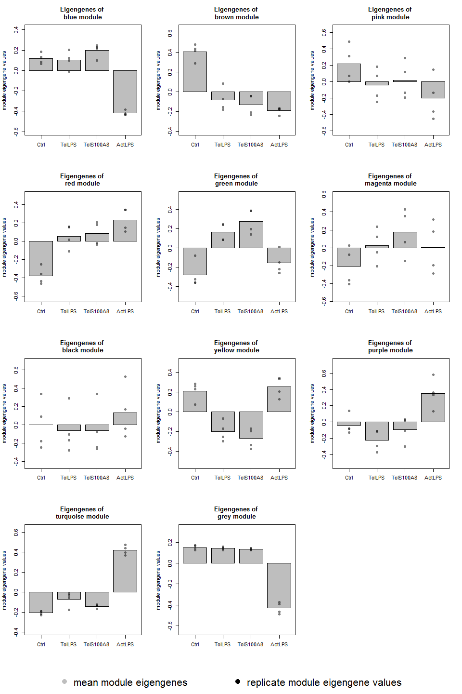

I created the R package exprAnalysis designed to streamline my RNA-seq data analysis pipeline. Below you find the vignette for installation and usage of the package.
This package combines functions from various packages used to analyze and visualize expression data from NGS or expression chips.
- It supports normalized input as e.g. from Cufflinks or expression chip arrays and raw count data from bam file input.
- It supports mRNA, miRNA, protein or other expression data.
So far, it is implemented for human and mouse data only!
It uses functions from the following packages:
- AnnotationDbi for annotating gene information
- beadarray for importing Illumina expression chip files from GenomeStudio
- clusterProfiler and DOSE for functional enrichment analysis
- DESeq2 for differential expression analysis of raw count data
- GenomicAlignments, GenomicFeatures, Rsamtools for reading bam files
- pcaGoPromoter for principle component analysis
- limma for differential expression analysis of normalised expression data
- pathview for mapping KEGG pathways
- gplots for heatmaps
- sva for batch correction
- WGCNA for coregulatory network determination
Prepare session
library(exprAnalysis)
# update all packages
source.bioc="https://bioconductor.org/biocLite.R"
source(source.bioc)
biocLite("BiocUpgrade")
biocLite(ask=FALSE)
update.packages()
# make sure the workspace is in pristine condition
rm(list=ls(all=TRUE))
orig_par <- par(no.readonly=T)
options(stringsAsFactors = FALSE)
The package can be installed via Github:
Beware that the vignette is rather large and thus takes a minute to compile. You can also just use this page (it is identical to the vignette).
# install package from github
install.packages("devtools")
library(devtools)
# either the latest stable release that passed TRAVIS CI check
devtools::install_github("ShirinG/exprAnalysis", build_vignettes=TRUE, ref = "stable.version0.1.0")
# or the development version
devtools::install_github("ShirinG/exprAnalysis", build_vignettes=TRUE, ref = "master")
There might be problems with installation of some dependency packages (especially Bioconductor packages and WGCNA and its dependencies from CRAN). In order to install them manually:
list.of.packages_bioconductor <- c("arrayQualityMetrics", "beadarray", "pcaGoPromoter", "limma", "pathview", "sva", "GO.db", "impute")
list.of.packages_cran <- c("WGCNA", "roxygen2", "testthat", "gplots")
new.packages_bioconductor <- list.of.packages_bioconductor[!(list.of.packages_bioconductor %in% installed.packages()[,"Package"])]
new.packages_cran <- list.of.packages_cran[!(list.of.packages_cran %in% installed.packages()[,"Package"])]
# CRAN
if(length(new.packages_cran)>0) install.packages(new.packages_cran)
# Bioconductor
if(length(new.packages_bioconductor)>0) {
source("https://bioconductor.org/biocLite.R")
biocLite(new.packages_bioconductor)
}
Load the library:
library("exprAnalysis")
# To view the vignette if you built it with the package:
vignette("exprAnalysis", package="exprAnalysis")
vignette("CummeRbund", package="exprAnalysis")
browseVignettes("exprAnalysis")
enableWGCNAThreads()
Functions
See package help (?functionname, ?data) for detailed descriptions of functions and example datasets.
Input data
Takes an expression data matrix containing numeric values as expression measures (e.g. read count data, FPKM values, Illumina expression data).
- Rownames should be gene or isoform identifiers (e.g. gene names)
- Colnames should be sample IDs (sample names)
This package contains two example matrices of randomly generated expression data as raw read counts (called “countmatrix”) and as normalized read counts (called “expmatrix”).
data("countmatrix")
data("expmatrix")
Starting from FPKM data
If you have FPKM data (e.g. quantile normalized) from Cufflinks, treat the data such as the expmatrix example.
Cuffdiff
See CummeRbund vignette included among the vignettes of this package CummeRbundVignette.html.
Starting from count data
If you want to do count data analysis, you can either produce a count matrix (e.g. with HTSeq) and proceed to DESeq2 analysis or you can produce the count table directly from the bam files and then proceed to DESeq2.
read_bam_to_countmatrix() returns a DESeq data set that can directly be used with the DEseq2 pipeline. Or you can manually load the count matrix that was saved by read_bam_to_countmatrix() and then go to DESeqDataFrameFromMatrix().
In read_bam_to_countmatrix() fragments will be counted only once to each gene, even if they overlap multiple exons of a gene which may themselves be overlapping.
read_bam_to_countmatrix() uses the packages Rsamtools, GenomicAlignments, GenomicFeatures, Biobase and SummarizedExperiment.
# Locate alignment files
dir <- getwd()
filenames <- fileslist[grep(".*sorted.bam$", list.files(dir))]
# Create a sample table
samplename <- sub("_accepted_hits.sorted.bam", "", filenames)
design <- c("Treatment", "Control")
sampleid <- sub("Sample", "", samplename)
sampleTable <- data.frame(row.names = samplename, sampleid = sampleid, filenames = filenames, colData = design, stringsAsFactors = F)
# sampleid filenames colData
#Sample1 1 Sample1_accepted_hits.sorted.bam Treatment
#Sample2 2 Sample2_accepted_hits.sorted.bam Control
data <- read_bam_to_countmatrix(sampleTable, gtffile = "Homo_sapiens.GRCh38.83.gtf", projectfolder = getwd(), outPrefix="Test")
countmatrix <- SummarizedExperiment::assay(data)
Continue count data analysis with DESeq2
See DESeq2 Vignette for additional details.
If you do not directly proceed from read_bam_to_countmatrix():
- read in saved count matrix
- define experimental design
- convert to DESeq data set
countmatrix <- read.table(file.path(projectfolder, "Countdata", outPrefix, paste0(outPrefix, "_Summarize_overlaps_count_matrix.txt")), header=T, sep = "\t")
design <- gsub("(.*)(_[0-9])", "\\1", colnames(countmatrix))
ExpDesign <- data.frame(row.names=colnames(countmatrix), treatment = design)
data <- DESeq2::DESeqDataSetFromMatrix(countData = countmatrix, colData=ExpDesign, design=~treatment)
DESeq2
- optional, but recommended: remove genes with zero counts over all samples
- run DESeq
- Extracting transformed values
Note: the rlog transformation is provided for applications other than differential testing. For differential testing we recommend the DESeq function applied to raw counts, as described later in this workflow, which also takes into account the dependence of the variance of counts on the mean value during the dispersion estimation step.
data <- data[rowSums(DESeq2::counts(data)) > 1, ]
data_DESeq <- DESeq2::DESeq(data)
expmatrix_DESeq <- DESeq2::rlog(data_DESeq, fitType="local")
expmatrix <- SummarizedExperiment::assay(expmatrix_DESeq)
Dispersion plot
DESeq2::plotDispEsts(data_DESeq, main="Dispersion Estimates")
Starting from Affymetrix expression chips
If you have CEL files, start with the following code to produce the expression matrix and then treat it like the expmatrix example:
- Read in the data and create an expression, using RMA for example
Currently the rma function implements RMA in the following manner 1. Probe specific correction of the PM probes using a model based on observed intensity being the sum of signal and noise 2. Normalization of corrected PM probes using quantile normalization (Bolstad et al., 2003) 3. Calculation of Expression measure using median polish.
library(affy)
# Choose directory containing CEL files
dir <- getwd()
# check, that you have the correct directory
celfiles <- file.path(dir, list.files(dir, recursive = TRUE)[grep(".*CEL$", list.files(dir, recursive = TRUE), ignore.case = TRUE)])
affydata <- ReadAffy(filenames=celfiles)
affy::MAplot(affydata,plot.method="smoothScatter")
eset <- affy::rma(affydata)
# If affy doesn' recognize the chip type, try the oligo package:
library(oligo)
rawData <- read.celfiles(celfiles)
oligo::MAplot(rawData, plotFun=smoothScatter)
eset <- backgroundCorrect(rawData, method="rma")
quality_control_plots(eset, groupColumn=c())
# Optional: Remove bad quality probes/ genes and/ or samples
write.exprs(eset, file="eset.txt")
library(made4)
overview(eset)
# RNA degradation plots
deg <- AffyRNAdeg(affydata)
plotAffyRNAdeg(deg)
expmatrix <- exprs(eset)
Starting from Illumina expression chips
If you have Illumina intensity data, load it into GenomeStudio first:
- Open New Project -> Gene Expression
- Choose Assay Type -> Next
- Choose Project Repo and name the project -> Next
- On the left side, mark all folders containing data, select “All” and import them into the right window -> Next
- Name Group Set, on the left side, mark all folders containing data, select “All” and import them into the right window (optionally, you can directly create groups here) -> Next
- For now, don’t use normalisation and don’ substract background
- Choose appropriate Content Descriptor (e.g. HumanHT-12_V4_0_R1_15002873_B.bgx) -> Finish
- Export SampleProbeProfile.txt: Choose columns AVG_Signal, Detection Pval, BEAD_STDERR and Avg_NBEADS
- Export ControlProbeProfile.txt: Choose columns AVG_Signal and Detection Pval
- You also need the Samplesheet.csv
read_Illumina() and normalise_eset() uses the R package beadarray.
dataFile <- file.path("SampleProbeProfile.txt")
qcFile <- file.path("ControlProbeProfile.txt")
sampleSheet <- file.path("samplesheet.csv")
# define Illumina Expression Array: "HumanHT-12 v?", "MouseWG-6 v?", "MouseRef-8 v?"
expressionchipType <- "HumanHT-12 v4"
eset <- read_Illumina(dataFile, qcFile, sampleSheet, expressionchipType, ProbeID = "PROBE_ID", skip = 0, controlID="ProbeID", qc.skip = 0, method_norm ="none", transform="log2")
quality_control_plots(eset)
# Optional: Remove bad quality probes/ genes and/ or samples
eset <- normalise_eset(eset)
expmatrix <- exprs(eset)
Batch correction
batch_removal() uses the R package sva.
pheno <- data.frame(sample=c(1:16), treatment=sub("(.*)(_[0-9])", "\\1", colnames(expmatrix)), batch=ifelse(grepl("Ctrl", colnames(expmatrix)) == TRUE, "1", ifelse(grepl("ActLPS", colnames(expmatrix)) == TRUE, "1", "2")), row.names = colnames(expmatrix))
expmatrix <- batch_removal(expmatrix, pheno)
Exploratory analysis of all genes
Variance vs mean gene expression across samples
Plots variance against mean gene expression across samples and calculates the correlation of a linear regression model.
var_vs_mean() uses the R package matrixStats.
var_vs_mean(countmatrix)

##
## Pearson's product-moment correlation
##
## data: log2(dispersion[, 1] + 1) and log2(dispersion[, 2] + 1)
## t = 281.2, df = 9998, p-value < 2.2e-16
## alternative hypothesis: true correlation is not equal to 0
## 95 percent confidence interval:
## 0.9399669 0.9443684
## sample estimates:
## cor
## 0.9422083
# var_vs_mean(expmatrix)
Intersample variances
library(corrgram)
Ctrl_cor <- expmatrix[,grep("Ctrl", colnames(expmatrix))]
corrgram::corrgram(Ctrl_cor, order=TRUE, lower.panel=corrgram::panel.pie,
upper.panel=corrgram::panel.pts, text.panel=corrgram::panel.txt,
main="Correlogram of controls")
Principle Component Analysis
Uses functions from the R package pcaGoPromoter.
You can only plot the principle components using:
groups <- as.factor(c(rep("Ctrl",4), rep("TolLPS",4), rep("TolS100A8",4), rep("ActLPS",4)))
pca_plot(expmatrix, groups)

Or you can plot the principle components and calculate TF and GO term enrichments of genes (defaults to top 2.5%) with highest and lowest loadings. With this function, the ouput files are directly saved to .pdf and .txt (by default to working directory).
pca_plot_enrich(expmatrix, groups)
Heatmaps
heatmaps() uses the R package gplots.
Here, of the 30 most highly expressed genes.
select <- order(rowMeans(expmatrix),decreasing=TRUE)[1:30]
heatmaps(expmatrix[select,], samplecols = rep(c("#E41A1C", "#377EB8", "#4DAF4A", "#984EA3"), each=4))

# Heatmap function from DESeq2, using pheatmap:
library(pheatmap)
sampleDists <- dist(t(expmatrix))
sampleDistMatrix <- as.matrix(sampleDists)
rownames(sampleDistMatrix) <- paste(expmatrix_DESeq$treatment)
colnames(sampleDistMatrix) <- NULL
colors <- grDevices::colorRampPalette( rev(RColorBrewer::brewer.pal(9, "Blues")) )(255)
pheatmap::pheatmap(sampleDistMatrix,
clustering_distance_rows=sampleDists,
clustering_distance_cols=sampleDists,
col=colors)
df <- data.frame(treatment = SummarizedExperiment::colData(data_DESeq)[,c("treatment")], row.names = rownames(SummarizedExperiment::colData(data_DESeq)))
pheatmap::pheatmap(expmatrix[select,], cluster_rows=TRUE, show_rownames=TRUE, cluster_cols=TRUE, annotation_col=df)
# Interactive heatmap
#devtools::install_github('talgalili/heatmaply')
library(heatmaply)
# sample correlation
hm <- heatmapr(cor(expmatrix[select,]), k_row = 4, k_col = 4)
# gene correlation
hm <- heatmapr(cor(t(expmatrix[select,])), k_row = NULL, k_col = NULL)
heatmaply(hm)
#Hover over heatmap to see individual values and sample/ gene IDs
WGCNA
Check WGCNA page for detailed description of the WGCNA package.
Hierarchical Clustering and outlier detection
Uses adjacency matrix function from the R package WGCNA and hierarchical clustering from the R package flashClust.
datTraits <- data.frame(Ctrl = c(rep(1, 4), rep(0,12)), TolPS = c(rep(0, 4), rep(1, 4),rep(0, 8)), TolS100A8 = c(rep(0, 8), rep(1, 4), rep(0, 4)), ActLPS = c(rep(0, 12),rep(1, 4)), Tol = c(rep(0, 4), rep(1, 8), rep(0, 4)), ExPhenotype = c(stats::rnorm(4, 10, 1),stats::rnorm(8, 25, 1),stats::rnorm(4, 50, 1)), row.names = colnames(expmatrix))
datExpr <- wgcna_sample_dendrogram(expmatrix, datTraits)
##

## Flagging genes and samples with too many missing values...
## ..step 1
## All genes are okay!
## All samples are okay!
# Optional: Remove outlier samples and repeats: All genes flagged for removal are saved to the object "remove_genes"
#head(remove_genes)
Choosing a Soft Threshold
Ideally, pick a SFT with R^2 > 0.9. In this example, this threshold was not reached, so I pick the highest SFT: 30.
# Choose a set of soft thresholding powers
powers=c(1:30)
# choose power based on SFT criterion
sft = pickSoftThreshold(datExpr, powerVector = powers, verbose = 5, networkType ="signed", corFnc= "bicor", corOptions=list(maxPOutliers=0.1))
# Plot the results:
tiff(filename= "SFT.tiff", width = 8000 , height = 4000, res=600, compression = "lzw")
par(mfrow=c(1,2))
# SFT index as a function of different powers
plot(sft$fitIndices[,1],-sign(sft$fitIndices[,3])*sft$fitIndices[,2],
xlab="Soft Threshold (power)",ylab="SFT, signed R^2",type="n",main=paste("Scale independence"))
text(sft$fitIndices[,1],-sign(sft$fitIndices[,3])*sft$fitIndices[,2],
labels=powers,col="red")
# this line corresponds to using an R^2 cut-off of h
abline(h=0.90,col="red")
# Mean connectivity as a function of different powers
plot(sft$fitIndices[,1],sft$fitIndices[,5],type="n",
xlab="Soft Threshold (power)",ylab="Mean Connectivity",main=paste("Mean connectivity"))
text(sft$fitIndices[,1],sft$fitIndices[,5],labels=powers,col="red")
dev.off()
Automatic module detection via dynamic tree cutting
softpower = 30
mergingThresh = 0.25
net = blockwiseModules(datExpr, checkMissingData = TRUE, corType = "bicor", # or pearson
maxBlockSize = 10000, networkType = "signed", power = softpower,
minModuleSize = 30, maxPOutliers = 0.1, mergeCutHeight = mergingThresh,
numericLabels = TRUE, saveTOMs = TRUE, randomSeed = 12345,
pamRespectsDendro = FALSE, saveTOMFileBase = "TESTexprsTOM")
str(net)
moduleColors <- wgcna_plotDendroAndColors(datExpr, datTraits, net)
# Recalculate MEs with color labels
MEs0 = moduleEigengenes(datExpr, moduleColors, softPower = softpower)$eigengenes
# Reorder given (eigen-)vectors such that similar ones (as measured by correlation) are next to each other:
MEs = orderMEs(MEs0)
rownames(MEs) <- rownames(datExpr)
write.table(MEs, "Automatic_ModuleEigengenes_numberLabel.txt", row.names=T, quote=F, sep="\t")
# calculate the module membership values (aka. module eigengene based connectivity kME):
datKME <- WGCNA::signedKME(datExpr, MEs) # equals geneModuleMembership
colnames(datKME) <- sub("kME", "MM.", colnames(datKME))
wgcna_modulememberships(datExpr, MEs, datKME, moduleColors)
wgcna_heatmaps(MEs, datExpr, datTraits)

Output file for gene ontology analysis
geneAnnotations() uses the R package AnnotationDbi.
# Annotate
genes = colnames(datExpr)
datExpr_anno <- geneAnnotations(input=genes, keys=genes, column=c("ENTREZID", "ENSEMBL"), keytype="SYMBOL", organism = "human")
# Correlations of genes and traits
traitsCor=cor(datExpr,datTraits,use="p")
colnames(traitsCor)=paste("cor",colnames(traitsCor),sep=".")
dataOutput=data.frame(datExpr_anno ,moduleColors, datKME, traitsCor)
write.table(dataOutput,"AllGenesResults.txt",row.names=F,sep="\t")
Module eigengene expression plots
data(MEs)
layout(matrix(c(1:length(colnames(MEs)),12,rep(13,3)), ncol=3, byrow=TRUE), heights=c(rep(3,4), 0.5))
for (color in gsub("ME", "", colnames(MEs))){
module_eigengene_plot(groups, MEs, color)
}
plot.new()
par(mai=c(0,0,0,0))
plot.new()
legend("bottom", c("mean module eigengenes", "replicate module eigengene values"), xpd = TRUE, horiz = TRUE, inset = c(0,0), bty = "n", col = c("grey", "black"), pch = 16, cex = 2)

Differential expression analysis
DE analyis using the R package limma
For normalized expression data (FPKM from Cufflinks or intensities from expression chip arrays).
design <- as.matrix(data.frame(Ctrl = c(rep(1, 4), rep(0,12)), TolLPS = c(rep(0, 4), rep(1, 4),
rep(0, 8)), TollMRP8 = c(rep(0, 8), rep(1, 4), rep(0, 4)), ActLPS = c(rep(0, 12),
rep(1, 4)), row.names = colnames(expmatrix)))
groupcomparisons=c("TolLPS-Ctrl", "TollMRP8-Ctrl", "ActLPS-Ctrl")
DEgenes_all <- diff_limma_all(expmatrix, design, groupcomparisons)
comparison="TolLPS-Ctrl"
Allgenes_limma_pw <- diff_limma_pw_unfiltered(expmatrix, design, comparison)
DEgenes_pw <- Allgenes_limma_pw[which(abs(Allgenes_limma_pw$logFC) > log2(1.5) & Allgenes_limma_pw$adj.P.Val < 0.05),]
Example output files from diff_limma functions have been saved to the package data and can be accessed via:
data("DEgenes_pw")
data("Allgenes_limma_pw")
# Export tables to Latex
library(xtable)
italic <- function(x){
paste0('{\\emph{ ', x, '}}')
}
print(xtable(DEgenes_pw[1:10,],
digits = 2,
caption = c("\\tt Long caption", "Short caption"),
label = "tab:testtable",
auto = TRUE),
caption.placement = "top",
sanitize.rownames.function = italic,
booktabs = TRUE,
floating = TRUE,
latex.environments = "center",
include.rownames = TRUE,
scalebox = 0.8,
tabular.environment = "tabularx", width = "\\textwidth")
# or to html
print(xtable(DEgenes_pw[1:10,],
digits = 2,
caption = c("Long caption", "Short caption"),
label = "tab:testtable",
auto = TRUE), type = "html", caption.placement = "top")
| logFC | CI.L | CI.R | AveExpr | t | P.Value | adj.P.Val | B | ENTREZID | ENSEMBL | |
|---|---|---|---|---|---|---|---|---|---|---|
| HCAR2 | -1.60 | -1.78 | -1.41 | 5.17 | -18.38 | 0.00 | 0.00 | 16.91 | 338442 | ENSG00000182782 |
| LOC100996342 | 2.54 | 2.18 | 2.90 | 6.89 | 15.03 | 0.00 | 0.00 | 14.33 | 100996342 | ENSG00000235478 |
| INPP4B | -1.54 | -1.77 | -1.31 | 4.80 | -14.19 | 0.00 | 0.00 | 13.58 | 8821 | ENSG00000109452 |
| LOC100505549 | -1.26 | -1.45 | -1.06 | 3.11 | -13.91 | 0.00 | 0.00 | 13.32 | 100505549 | |
| FCGBP | -2.06 | -2.38 | -1.75 | 3.39 | -13.87 | 0.00 | 0.00 | 13.28 | 8857 | ENSG00000275395 |
| ZSCAN31 | -1.40 | -1.63 | -1.18 | 3.44 | -13.33 | 0.00 | 0.00 | 12.76 | 64288 | ENSG00000235109 |
| MIR3665 | -1.32 | -1.53 | -1.11 | 2.69 | -13.27 | 0.00 | 0.00 | 12.70 | 100500861 | ENSG00000266325 |
| PTH2R | -1.62 | -1.90 | -1.35 | 3.69 | -12.56 | 0.00 | 0.00 | 11.98 | 5746 | ENSG00000144407 |
| GCLC | -2.42 | -2.83 | -2.00 | 3.13 | -12.27 | 0.00 | 0.00 | 11.66 | 2729 | ENSG00000001084 |
| SOX30 | 2.54 | 2.10 | 2.98 | 8.57 | 12.19 | 0.00 | 0.00 | 11.59 | 11063 | ENSG00000039600 |
DE analyis using DESeq2
For raw read count data.
contrast DE groups:
- lfc = treatment > Ctrl, - lfc = treatment < Ctrl p-value & p.adjust values of NA indicate outliers detected by Cook’s distance NA only for p.adjust means the gene is filtered by automatic independent filtering for having a low mean normalized count
library(DESeq2)
library(ggplot2)
library(ggrepel)
# find possible contrasts with
DESeq2::resultsNames(data_DESeq)
res <- DESeq2::results(data_DESeq, contrast=list("treatmentActLPS", "treatmentCtrl"), cooksCutoff = 0.99, independentFiltering = TRUE, alpha = 0.05, pAdjustMethod = "BH")
# order results table by the smallest adjusted p value:
res <- res[order(res$padj),]
results = as.data.frame(dplyr::mutate(as.data.frame(res), sig=ifelse(res$padj<0.05, "FDR<0.05", "Not Sig")), row.names=rownames(res))
DEgenes_DESeq <- results[which(abs(results$log2FoldChange) > log2(1.5) & results$padj < 0.05),]
p = ggplot2::ggplot(results, ggplot2::aes(log2FoldChange, -log10(pvalue))) +
ggplot2::geom_point(ggplot2::aes(col=sig)) +
ggplot2::scale_color_manual(values=c("red", "black")) +
ggplot2::ggtitle("Volcano Plot of DESeq2 analysis")
p+ggrepel::geom_text_repel(data=results[1:10, ], ggplot2::aes(label=rownames(results[1:10, ])))
# If there aren't too many DE genes:
#p+geom_text_repel(data=dplyr::filter(results, padj<0.05), aes(label=rownames(results[1:10, ])))
MA-plot
DESeq2::plotMA(res, main="MA Plot", ylim=c(-2,2))
plotCounts, which normalizes counts by sequencing depth and adds a pseudocount of 1/2 to allow for log scale plotting
par(mfrow=c(1,3))
for (i in 1:3){
gene <- rownames(res)[i]
main = gene
DESeq2::plotCounts(data_DESeq, gene=gene, intgroup="treatment", main = main)
}
Gene annotations
Can be used to add e.g. ENTREZ ID, ENSEMBL ID, etc. to gene name.
DEgenes_pw <- geneAnnotations(input=DEgenes_pw, keys=row.names(DEgenes_pw), column=c("ENTREZID", "ENSEMBL"), keytype="SYMBOL", organism = "human")
DEgenes_DESeq <- geneAnnotations(input=DEgenes_DESeq, keys=row.names(DEgenes_DESeq), column=c("ENTREZID", "ENSEMBL"), keytype="SYMBOL")
Enrichment Analysis using clusterPofiler
library(clusterProfiler)
library(DOSE)
geneList <- as.vector(Allgenes_limma_pw$logFC)
names(geneList) <- rownames(Allgenes_limma_pw)
gene <- na.omit(DEgenes_pw$ENTREZID)
OrgDb <- org.Hs.eg.db::org.Hs.eg.db # can also be org.Mm.eg.db::org.Mm.eg.db
# Group GO
ggo <- clusterProfiler::groupGO(gene = gene,
OrgDb = OrgDb,
ont = "BP",
level = 3,
readable = TRUE)
head(summary(ggo))
barplot(ggo, drop=TRUE, showCategory=12)
# GO over-representation test
ego <- clusterProfiler::enrichGO(gene = gene,
OrgDb = OrgDb,
ont = "BP",
pAdjustMethod = "BH",
pvalueCutoff = 0.05,
qvalueCutoff = 0.05,
readable = TRUE)
head(summary(ego))
barplot(ego, showCategory=25)
clusterProfiler::dotplot(ego, showCategory=25)
#enrichMap(ego)
cnetplot(ego, categorySize="pvalue", foldChange=geneList)
clusterProfiler::plotGOgraph(ego)
# enrichGO test the whole GO corpus and enriched result may contains very general terms. With dropGO function, user can remove specific GO terms or GO level from results obtained from both enrichGO and compareCluster.
## KEGG over-representation test
kk <- clusterProfiler::enrichKEGG(gene = gene,
organism = 'hsa',
pvalueCutoff = 0.05)
head(summary(kk))
barplot(kk, showCategory=8)
clusterProfiler::dotplot(kk)
cnetplot(kk, categorySize="geneNum", foldChange=geneList)
Pathview
uses the R package pathview.
For Toll-like-receptor signaling:
pathview_func(DEgenes_pw, logFCcolumn="logFC", pathway.id = "04620", out.suffix = "DE_TolLPS")
Venn diagrams and Biological theme comparison
library(gplots)
venn_list <- list(genelist1 = na.omit(rownames(DEgenes_pw)[1:50]), genelist2 = na.omit(rownames(DEgenes_pw)[30:80]), genelist3 = na.omit(rownames(DEgenes_pw)[48:100]))
gplots::venn(venn_list, show.plot=TRUE, small=0.7, showSetLogicLabel=FALSE, simplify = TRUE)
mtext("If you want a header, put it here", side=3, cex = 0.8)
# Biological theme comparison
compGO <- clusterProfiler::compareCluster(geneCluster = venn_list,
fun = "enrichGO",
ont = "BP",
OrgDb = OrgDb,
qvalueCutoff = 0.001,
pAdjustMethod = "BH",
readable = TRUE)
compKEGG <- clusterProfiler::compareCluster(geneCluster = venn_list,
fun = "enrichKEGG",
qvalueCutoff = 0.05,
pAdjustMethod = "BH")
compKEGG <- clusterProfiler::setReadable(compKEGG, OrgDb = OrgDb)
compMKEGG <- clusterProfiler::compareCluster(geneCluster = venn_list,
fun = "enrichMKEGG",
organism='hsa', minGSSize=1)
compDO <- clusterProfiler::compareCluster(geneCluster = venn_list,
fun = "enrichDO",
qvalueCutoff = 0.05,
pAdjustMethod = "BH",
readable = TRUE)
# For visualisation see Enrichment Analysis using clusterProfiler
Networks
TF networks
Organism can be human or mouse. For human, the longer published list of TFs is used; for mouse the shorter list provided by Bonn (for which I don’t have any more info on where it comes from).
This function produced two output files:
- The .expression matrix of TF expression data.
It will have to be opened with Biolayout3D: Set Minimum Correlation and Correlation metric (by default 0.7 and Pearson). Then choose a suitable correlation coefficient (Graph Degree Distribution should be close to linear). Save the resulting network as a TGF file.
Open the TGF file in Cytoscape: Open network from file. Then got to Advanced Options: untick “Use first column names” and add “ to “Other:”. Now set Column 2 as Source and Column 5 as Target.
- Open the node annotation table in .txt format.
In cytoscape, open table from file, import data as Node Table Columns. You can then customize the look of your network.
For example, go to Style and
-
go to Border Paint, Column: DE, Mapping type: Discrete and choose a color for 1 and 0
-
go to Fill Color, Column logFC, Mapping Type: Continuous and choose colors.
TF_networks(expmatrix, nodeAnno=Allgenes_limma_pw)

BiNGO (Cytoscape)
-
Go to Cytoscape
-
Apps -> BiNGO
-
The BiNGO Settings panel pops up. Start by filling in a name for your cluster. This name will be used for creating the output file and the visualization of the results in Cytoscape.
-
Check Paste Genes from Text and paste gene names into field below
-
We want to assess overrepresentation of GO categories, and we want to visualize the results in Cytoscape. The corresponding boxes are checked accordingly by default. Then select a statistical test (the Hypergeometric Test is exact and equivalent to an exact Fisher test, the Binomial Test is less accurate but quicker) and a multiple testing correction (we recommend Benjamini & Hochberg’s FDR correction, the Bonferroni correction will be too conservative in most cases), and choose a significance level, e.g. 0.05. Since we only want to visualize those GO categories that are overrepresented after multiple testing correction, and their parents in the GO hierarchy, select the corresponding visualization option. We’re interested in assessing the overrepresentation of functional categories in our cluster with respect to the whole genome, which is why we choose the Complete Annotation as the reference set.
-
Select GO _Biological _Process from the ontology list, and Human from the organism list. We want to consider all evidence codes, so don’t fill in anything in the evidence code box.
-
Finally, select a directory to save the output file in (the file will be named test.bgo if you filled in test as a cluster name), and press Start BiNGO…
-
The program will inform you of its progress while parsing the annotations and calculating the tests, corrections and layout. Finally, a visualization of the overrepresented GO categories is created in Cytoscape. Uncolored nodes are not overrepresented, but they are the parents of overrepresented categories further down. Yellow nodes represent GO categories that are overrepresented at the significance level . For more significant p-values, the node color gets increasingly more orange (see also the Color Legend panel). If you’d like another layout, e.g. hierarchical, select the corresponding option from the Cytoscape Visualization menu. Regardless of the layout you choose, you’ll probably have to tweak the nodes a little in order to avoid overlapping node labels. The list of significantly overrepresented functional categories is shown in the BiNGO output window (more information on the cluster and options you selected, and on which genes did not produce any annotation, is stored in the test.bgo file).
Other functions
miRNA target identification
# The current version of multiMiR is 1.0.1 and can be downloaded from
http://multimir.ucdenver.edu/multiMiR_1.0.1.tar.gz.
install.packages("XML")
install.packages("RCurl")
install.packages("/pathname/multiMiR_1.0.1.tar.gz", repos=NULL, type="source")
library(multiMiR)
miRNA_list <- as.character(c("hsa-miR-146b-3p", "hsa-miR-155-5p", "hsa-miR-4521"))
miRNA_allTargets = get.multimir(org="hsa", mirna=miRNA_list, target=NULL, table="all", summary=TRUE, predicted.cutoff.type="p", predicted.cutoff=NULL)
str(miRNA_allTargets)
write.table(miRNA_allTargets$predicted, "miRNAs_allTargets_predictedTargets.txt", row.names = F, col.names = T, sep="\t")
write.table(miRNA_allTargets$validated, "miRNAs_allTargets_validatedTargets.txt", row.names = F, col.names = T, sep="\t")
write.table(miRNA_allTargets$disease.drug, "miRNAs_allTargets_diseaseDrugTargets.txt", row.names = F, col.names = T, sep="\t")
write.table(miRNA_allTargets$summary, "miRNAs_allTargets_summaryTargets.txt", row.names = F, col.names = T, sep="\t")
Hypergeometric test for enrichment
Analogous to Fisher’s Exact Test.
phyper(SampleSuccesses -1, PopulationSuccesses, PopulationSize - PopulationSuccesses, sampleSize, lower.tail = FALSE)
Citations
Martin Morgan, Herve Pages, Valerie Obenchain and Nathaniel Hayden (2016). Rsamtools: Binary alignment (BAM), FASTA, variant call (BCF), and tabix file import. R package version 1.24.0. http://bioconductor.org/packages/release/bioc/html/Rsamtools.html
Lawrence M, Huber W, Pages H, Aboyoun P, Carlson M, et al. (2013) Software for Computing and Annotating Genomic Ranges. PLoS Comput Biol 9(8): e1003118. <doi:10.1371/journal.pcbi.1003118>
Martin Morgan, Valerie Obenchain, Michel Lang and Ryan Thompson (2016). BiocParallel: Bioconductor facilities for parallel evaluation. R package version 1.6.2. https://github.com/Bioconductor/BiocParallel
Martin Morgan, Valerie Obenchain, Jim Hester and Herve Pages (2016). SummarizedExperiment: SummarizedExperiment container. R package version 1.2.2.
Michael I Love, Wolfgang Huber and Simon Anders (2014): Moderated estimation of fold change and dispersion for RNA-Seq data with DESeq2. Genome Biology
Gautier, L., Cope, L., Bolstad, B. M., and Irizarry, R. A. 2004. affy—analysis of Affymetrix GeneChip data at the probe level. Bioinformatics 20, 3 (Feb. 2004), 307-315.
Carvalho B. S., and Irizarry, R. A. 2010. A Framework for Oligonucleotide Microarray Preprocessing. Bioinformatics.
Kauffmann, A., Gentleman, R.,, Huber, W. (2009) arrayQualityMetrics–a bioconductor package for quality assessment of microarray data. Bioinformatics, 25(3):415-6.
Dunning, M.J., Smith, M.L., Ritchie, M.E., Tavare, S. beadarray: R classes and methods for Illumina bead-based data, Bioinformatics. 2007, 23(16):2183-4.
Jeffrey T. Leek, W. Evan Johnson, Hilary S. Parker, Elana J. Fertig, Andrew E. Jaffe and John D. Storey (2016). sva: Surrogate Variable Analysis. R package version 3.20.0.
Henrik Bengtsson (2016). matrixStats: Functions that Apply to Rows and Columns of Matrices (and to Vectors). R package version 0.50.2. https://CRAN.R-project.org/package=matrixStats
Kevin Wright (2015). corrgram: Plot a Correlogram. R package version 1.8. https://CRAN.R-project.org/package=corrgram
Hansen M, Gerds TA, Nielsen OH, Seidelin JB, Troelsen JT, et al. (2012) pcaGoPromoter - An R Package for Biological and Regulatory Interpretation of Principal Components in Genome-Wide Gene Expression Data. PLoS ONE 7(2): e32394. <doi:10.1371/journal.pone.0032394>
Raivo Kolde (2015). pheatmap: Pretty Heatmaps. R package version 1.0.8. https://CRAN.R-project.org/package=pheatmap
Gregory R. Warnes, Ben Bolker, Lodewijk Bonebakker, Robert Gentleman, Wolfgang Huber Andy Liaw, Thomas Lumley, Martin Maechler, Arni Magnusson, Steffen Moeller, Marc Schwartz and Bill Venables (2016). gplots: Various R Programming Tools for Plotting Data. R package version 3.0.1. https://CRAN.R-project.org/package=gplots
Tal Galili (2016). heatmaply: Interactive Heat Maps Using ‘plotly’. R package version 0.3.2. https://CRAN.R-project.org/package=heatmaply
Langfelder P and Horvath S, WGCNA: an R package for weighted correlation network analysis. BMC Bioinformatics 2008, 9:559 <doi:10.1186/1471-2105-9-559>
Peter Langfelder, Steve Horvath (2012). Fast R Functions for Robust Correlations and Hierarchical Clustering. Journal of Statistical Software, 46(11), 1-17. URL http://www.jstatsoft.org/v46/i11/.
Herve Pages, Marc Carlson, Seth Falcon and Nianhua Li (2016). AnnotationDbi: Annotation Database Interface. R package version 1.34.3.
Ritchie, M.E., Phipson, B., Wu, D., Hu, Y., Law, C.W., Shi, W., and Smyth, G.K. (2015). limma powers differential expression analyses for RNA-sequencing and microarray studies. Nucleic Acids Research 43(7), e47.
David B. Dahl (2016). xtable: Export Tables to LaTeX or HTML. R package version 1.8-2. https://CRAN.R-project.org/package=xtable
H. Wickham. ggplot2: Elegant Graphics for Data Analysis. Springer-Verlag New York, 2009.
Kamil Slowikowski (2016). ggrepel: Repulsive Text and Label Geoms for ‘ggplot2’. R package version 0.5. https://CRAN.R-project.org/package=ggrepel
Guangchuang Yu, Li-Gen Wang, Yanyan Han and Qing-Yu He. clusterProfiler: an R package for comparing biological themes among gene clusters. OMICS: A Journal of Integrative Biology 2012, 16(5):284-287
Guangchuang Yu, Li-Gen Wang, Guang-Rong Yan, Qing-Yu He. DOSE: an R/Bioconductor package for Disease Ontology Semantic and Enrichment analysis. Bioinformatics 2015 31(4):608-609
Marc Carlson (2016). org.Hs.eg.db: Genome wide annotation for Human. R package version 3.3.0.
Marc Carlson (2016). org.Mm.eg.db: Genome wide annotation for Mouse. R package version 3.3.0.
Luo, W. and Brouwer C., Pathview: an R/Bioconductor package for pathway-based data integration and visualization. Bioinformatics, 2013, 29(14): 1830-1831, doi: 10.1093/bioinformatics/btt285
Yuanbin Ru and Katerina Kechris (2014). multiMiR: Integration of multiple microRNA-target databases with their disease and drug associations. R package version 1.0.1.
Session Info
sessionInfo()
## R version 3.3.1 (2016-06-21)
## Platform: x86_64-w64-mingw32/x64 (64-bit)
## Running under: Windows 7 x64 (build 7601) Service Pack 1
##
## locale:
## [1] LC_COLLATE=English_United States.1252
## [2] LC_CTYPE=English_United States.1252
## [3] LC_MONETARY=English_United States.1252
## [4] LC_NUMERIC=C
## [5] LC_TIME=English_United States.1252
##
## attached base packages:
## [1] stats graphics grDevices utils datasets methods base
##
## other attached packages:
## [1] exprAnalysis_0.1.0
##
## loaded via a namespace (and not attached):
## [1] fastcluster_1.1.20 gtools_3.5.0 splines_3.3.1
## [4] lattice_0.20-34 colorspace_1.2-6 htmltools_0.3.5
## [7] stats4_3.3.1 yaml_2.1.13 chron_2.3-47
## [10] survival_2.39-5 pcaGoPromoter_1.16.0 foreign_0.8-66
## [13] DBI_0.5 BiocGenerics_0.18.0 RColorBrewer_1.1-2
## [16] matrixStats_0.50.2 foreach_1.4.3 plyr_1.8.4
## [19] stringr_1.1.0 zlibbioc_1.18.0 Biostrings_2.40.2
## [22] munsell_0.4.3 gtable_0.2.0 caTools_1.17.1
## [25] codetools_0.2-14 evaluate_0.9 latticeExtra_0.6-28
## [28] Biobase_2.32.0 knitr_1.14 IRanges_2.6.1
## [31] doParallel_1.0.10 parallel_3.3.1 AnnotationDbi_1.34.4
## [34] preprocessCore_1.34.0 Rcpp_0.12.7 acepack_1.3-3.3
## [37] KernSmooth_2.23-15 flashClust_1.01-2 scales_0.4.0
## [40] formatR_1.4 gdata_2.17.0 org.Hs.eg.db_3.3.0
## [43] S4Vectors_0.10.3 Hmisc_3.17-4 WGCNA_1.51
## [46] XVector_0.12.1 gplots_3.0.1 gridExtra_2.2.1
## [49] impute_1.46.0 ellipse_0.3-8 ggplot2_2.1.0
## [52] digest_0.6.10 stringi_1.1.1 grid_3.3.1
## [55] tools_3.3.1 bitops_1.0-6 magrittr_1.5
## [58] RSQLite_1.0.0 dynamicTreeCut_1.63-1 Formula_1.2-1
## [61] cluster_2.0.4 GO.db_3.3.0 Matrix_1.2-7.1
## [64] data.table_1.9.6 rmarkdown_1.0 iterators_1.0.8
## [67] rpart_4.1-10 nnet_7.3-12